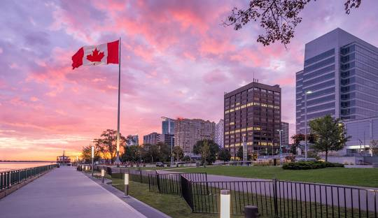

Discover Windsor's Green Spaces
The City of Windsor, renowned for its rich automotive heritage and vibrant culture, is also home to an impressive collection of parks and natural areas. This website showcases five of the city's most cherished parks, each offering a unique blend of recreational opportunities, natural beauty, and community focus. From the serene waterfront vistas of Coventry Gardens at Reaume Park, featuring the iconic Peace Fountain, to the historical elegance of Willistead Park surrounding the majestic Willistead Manor, there is a green space for every resident and visitor to enjoy. Explore the formal gardens and war memorials of Jackson Park, delve into the vast natural habitats of Ojibway Park, or relax on the sandy shores of Sandpoint Beach Park. These parks are not just plots of land; they are the heart of our community, providing spaces for relaxation, celebration, and connection with nature. They represent Windsor's commitment to preserving green space and enhancing the quality of life for all.